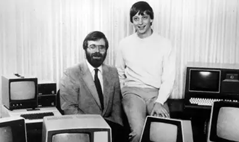
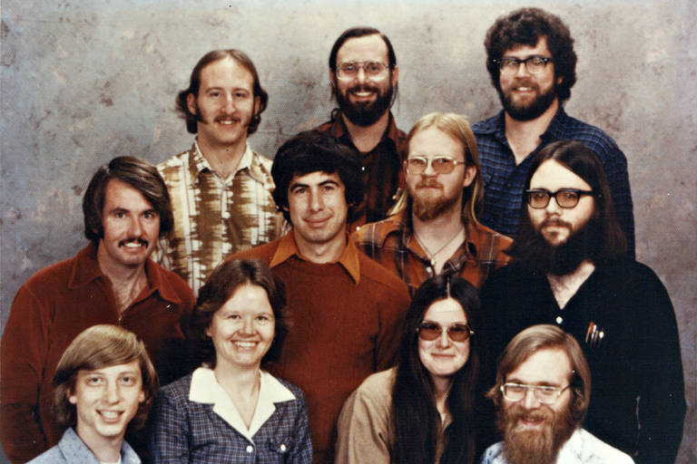

Há 50 anos, no dia 4 de abril de 1975 , os amigos Bill Gates e Paul Allen abriram uma empresa inspirados por uma revista que era popular entre os entusiastas dos primeiros computadores para uso doméstico. A companhia foi chamada de Microsoft, hoje um dos maiores e mais valiosos conglomerados da indústria da tecnologia.
Hoje, a marca conta com 228 mil funcionários espalhados por dezenas de países, com escritórios regionais incluindo uma divisão no Brasil existente desde 1989. Ao longo desses anos, ela ajudou a revolucionar setores como computador pessoal, produtividade, games, navegação, comunicação pela internet e computação na nuvem.
Como foram os 50 anos da Microsoft
A Microsoft nasceu a partir de dois amigos com uma paixão em comum pelo início da era dos computadores pessoais. Gates e Allen ficaram impressionados com o Altair 8800, um dos primeiros modelos de pequeno porte que era comprado em forma de kit para ser montado e usado em casa. Ela começa na cidade de Albuquerque, no estado norte-americano do Novo México, com uma logo bastante simples e que separa Micro (de 'microprocessador', os chips avançados da época) e Soft (de 'software', ou programas de computador).

Ao longo dos anos, ela troca de sede duas vezes: primeiro para Bellevue, em Washington, ainda na década de 1970, e quinze anos depois para Redmond, onde está até hoje. Gates largou a faculdade para se dedicar aos negócios, atuou como CEO por décadas e se tornou a principal figura pública da empresa em entrevistas e conferências. Ele só deixou o cargo em 2000, mas permaneceu ainda mais tempo como membro do conselho até a aposentadoria. Já Allen, que já trabalhava como programador antes da Microsoft, saiu das atividades diárias ainda na década de 1980 por questões de saúde. Mantendo ações da companhia, ele passou a se dedicar a investimentos e filantropia. Ele faleceu em 2018, aos 65 anos.
Curiosamente, a Microsoft teve poucas trocas no cargo de gerência executiva nas cinco décadas de vida. Após Gates, Steve Ballmer assumiu o cargo em 1998 — com uma presença de palco enérgica e algumas declarações que envelheceram mal contra concorrentes. O seu substituto é o atual CEO Satya Nadella, que está desde 2014 na posição.

Além disso, a imagem da Microsoft também mudou bastante ao longo dos anos. Em especial na década de 1990, ela tinha o domínio do mercado de sistemas operacionais para computadores, além de programas de edição de conteúdo e de navegadores. Isso rendeu até uma investigação por atividades anticompetitivas de mercado, já que os serviços eram vendidos juntos ou pré-instalados, mas essa ação ajudou a consolidar a empresa no atual patamar. Atualmente, a gestão da companhia é elogiada pela diversificação nos produtos e na eficiência da gestão. A Microsoft virou em 2024 a segunda empresa do mundo a chegar no valor de mercado de US$ 1 trilhão.

A evolução da receita da Microsoft é notável, com crescimento médio de 13%. nos últimos 10 anos. Os resultados mais recentes foram impulsionados pela divisão da Azure. O motivo? O avanço em iniciativas de IA generativa em 2023. O lucro da Microsoft totalizou US$ 22 bilhões (+33% A/A), favorecido pelo "boom" da IA. Porém, os gastos e impactos associados à integração de inteligência artificial nas soluções da Microsoft ainda não está claros e podem continuar pressionando os próximos resultados.